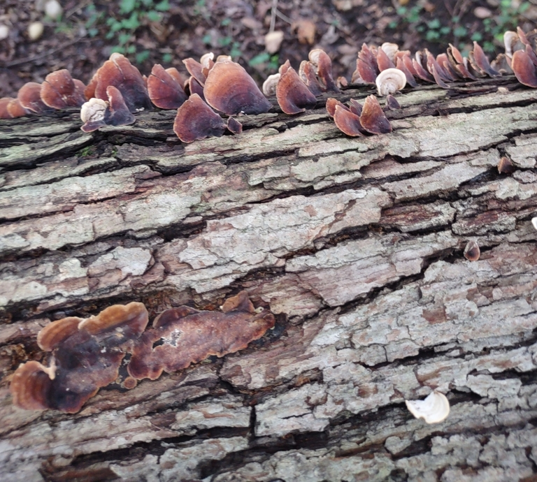

An example of a species that I identified and uploaded to the Inaturalist app.
In this case, this is a photo of False Turkey-Tail growing on a tree log.
An example of a species that I identified and uploaded to the Inaturalist app.
In this case, this is a photo of False Turkey-Tail growing on a tree log.
On September 11th, I went to a bioblitz event in the Guilford Woods. A bioblitz is an event where people try to find a lot of species in a specific area in a short period of time. The bioblitz I participated in was located at Guilford Woods, a small 15 acre remnant of a forest at the edge of the University. I spent a couple hours at the event, documenting various insects and plant species as part of the Anacostia watershed's society program.